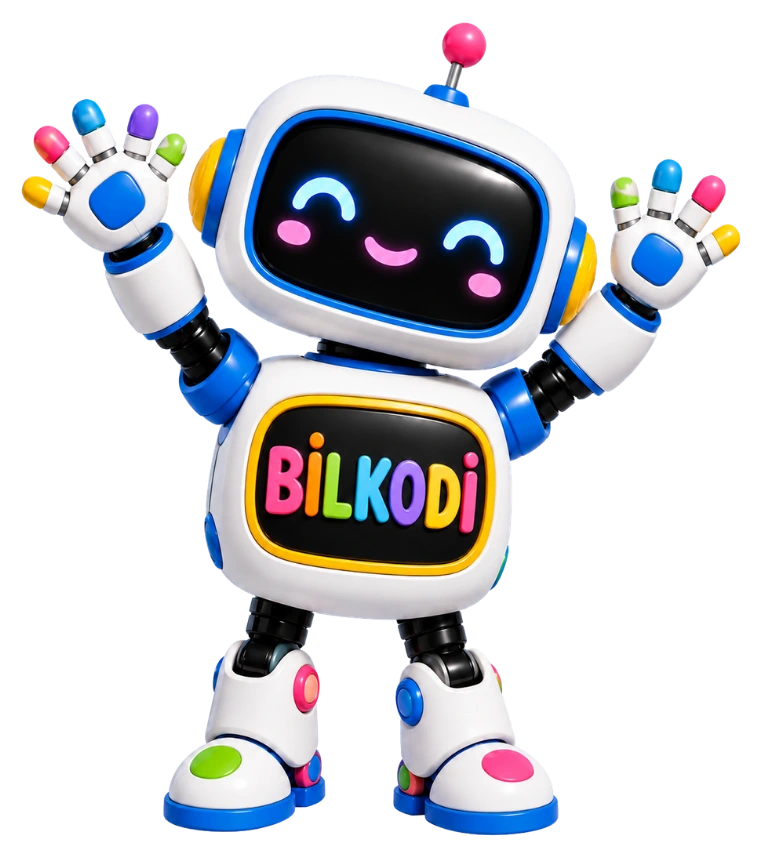

BİLFEN ANAOKULLARI SUNAR
BİLKODDİJİTAL OYUN ATÖLYESİ
Okulda da evde de eğlenceli öğrenme!
Kodla, keşfet, tasarla, oyna! Bilkodi ile birbirinden eğlenceli dijital oyunlar seni bekliyor.
✓ Ücretsiz erişim · Üyelik gerektirmez
Akıllı Tahta
Uyumlu
Uyumlu
Tablet ve Telefon
Desteği
Desteği
Evden
Erişim
Erişim
Dokunmatik
Kullanım
Kullanım
YENİ KEŞİFLER
Tüm oyunları gör Yeni Eklenen Oyunlar ✦
Atölyemize katılan yeni maceraları keşfet!
BİRLİKTE OYNAYALIM
Oyun Kütüphanesi
Bir oyun seç, büyük bir maceraya başla!
9 oyun seni bekliyor
Burada henüz oyun yok
Başka bir oyun adı veya kategori deneyebilirsin.
ÖĞRETMEN & VELİ KÖŞESİ
Öğrenme her yerde devam etsin!
Okulda akıllı tahtadan, evde tablet veya telefondan oyun bağlantısına dokunmanız yeterli. Oyun kartlarındaki bağlantı simgesiyle istediğiniz oyunun adresini kopyalayıp paylaşabilirsiniz.
Not: Tam ekran özelliği tarayıcı desteğine bağlıdır. Açılan oyunların kendi tam ekran kontrolleri olabilir.